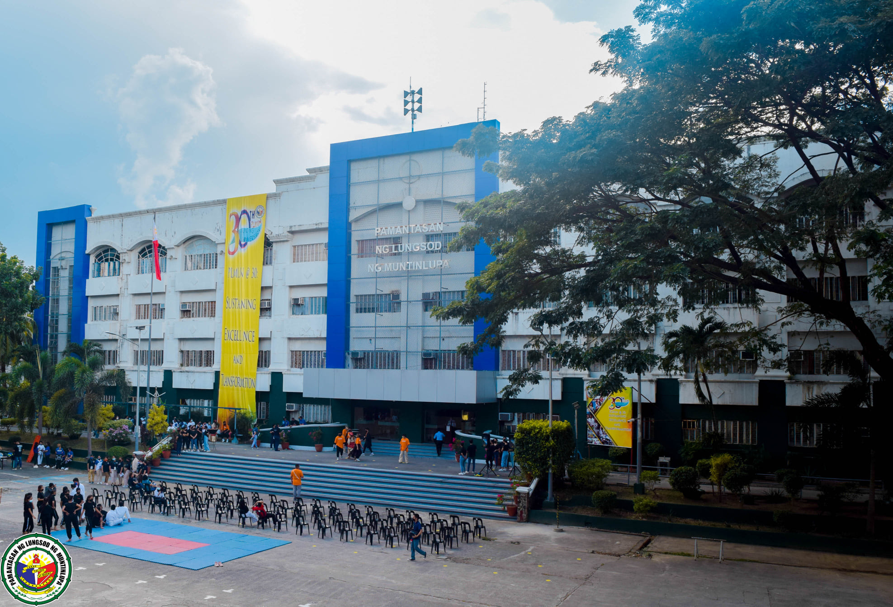

Jeremiah is currently a Second-Year student studying Bachelor of Science in Computer Science at Pamantasan ng Lungsod ng Muntinlipa. He is currently building his skills and discipline to successfully deal with all his future endeavors.
As a person, he usually seems timid and tardy. While most people have their reasons for being like so, Jeremiah is usually just timid or tardy because he didn't get enough sleep the previous night. It is extremely common for him to seem disinterested or sometimes even unpleasant-- but in reality, he simply wants sleep.
While having the ability to talk to countless amounts of people in crowds effortlessly, Jeremiah finds it hard to talk to people individually. He may be interested with certain people sometimes, but a certain sense of awkwardness or overthinking stops him from approaching them. He's still in progress.

He is currently living in General Mariano Alvarez Cavite and is on his 19th year of his life. He was born on March 2004 onto a modest family of five, and is doing his best to help his family one day by studying. While Jeremiah is now currently studying hard at Pamantasan ng Lungsod ng Muntinlupa, he also attended Senior High School at IETI College of Science and Technology.
Upon taking up the subject 'Information Management', he expects to expand his knowledge on managing the back-end side of a website. He is still quite not confident of his back-end skills and he is expecting to broaden it by using SQL and different DBMS Softwares
In five years, he sees himself as someone who has a degree in Computer Science and is hopefully now taking up a job in the corporate world of the tech industry. In five years, he also sees himself building his background or resume in order to land a job abroad or as a freelancer. It has always been his dream to experience what lfe is like in the other sides of the world so in five years, he would be definitely working his all to make his dream come to life.
Jeremiah usually spends most of his time doing the things listed below.
He loves games that focuses on Fantasy, World-Building, Exploration, Story, Mystery, Puzzles, and Strategy. He sees the games that he plays as past-times and he usually sets goals to achieve for himself on every game that he plays. He is a passionate gamer that loves to solve puzzles presented in-game, strategise heavily to solve combat dillemas, and ultimately, explore world that are beyond our own.
Jeremiah is a kind of person that deeply enjoys imagery and atmosphere that is brought to him by mere sets of words. He finds it amazing how a collection of texts could generate such great visuals and emotions into our minds. He values the things that he picks up from reading the books and stories that he reads and he genuinely believes that these kind of small things are what makes a human a person.
For Jeremiah, consuming content that matters to you and affect you in the long run is all that matters. There are countless amounts of content out there in the internet and for him, we should all strive to only consume content that could give us an actual impact in our life and how we think, instead of consuming content purely for entertainment alone.
Written below are random things that Jeremiah Likes or Dislikes.
Jeremiah always fancied studying Science even when he was young. It was his one true passion to study Science so much so, that he committed into studying Science, Technology, Engineering, and Mathematics on his Senior High School Years in IETI San Pedro-- and he loved every second of it. While his current career path right now doesn't have that much to do with the conventional Science that he loved, he is doing his best to aid his situation and one day, his finances.
A cup of Coffee per day? Maybe two? Three? Four?? Jeremiah has been through all of that before. He has an unhealthy love for Coffee and while he knows he should, he has no intentions of stopping or slowing down.
Cute Doggies that prances and frolicks around without a care in the world. Who doesn't love them? Jeremiah definitely does.
While some people may try to avoid arguments at all cost, as weird as it is, Jeremiah actually enjoys arguments. However, the kind of arguments that he enjoys are not the kind where people are throwing hands at each other and cursing one another-- He simply enjoys trying to form sound contradictions on famous thoughts or ideas. He is quite the overthinker and at rare times, he actually knows how to put it to use.
As an avid gamer and movie enthusiast, Jeremiah's arch nemesis is slow internet. He absolutely despises the thought of having to wait a few miliseconds for a video or song to buffer since he argues "It ruins the mood". In his defense though, who doesnt hate slow internet?
"Your harshest critic is always going to be yourself". While most people have a fair share of their own insecurities about themselves, Jeremiah takes it up a few notches by fully committing himself into hating himself. Don't worry about him though, he's perfectly fine, he's just dramatic.
Listed Below are the skills that Jeremiah posseses.
On his time within studying Bachelor of Science in Computer Science on Pamantasan ng Lungsod ng Muntinlupa, Jeremiah garnered a few coding skills to put up his sleeve. These skills specifically are basic knowledges of:
Jeremiah could be quite the speaker on stage. He tries to balance formality with humor to achieve a lighter atmosphere on stage. This trope has been quite effective for him to create a least awkward time on stage. While having such a hard time on interacting with people, Jeremiah has never struggle on Public Speaking.